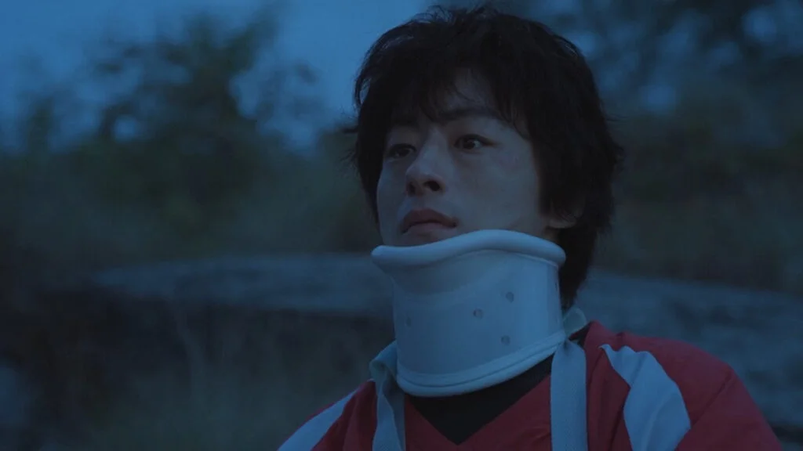
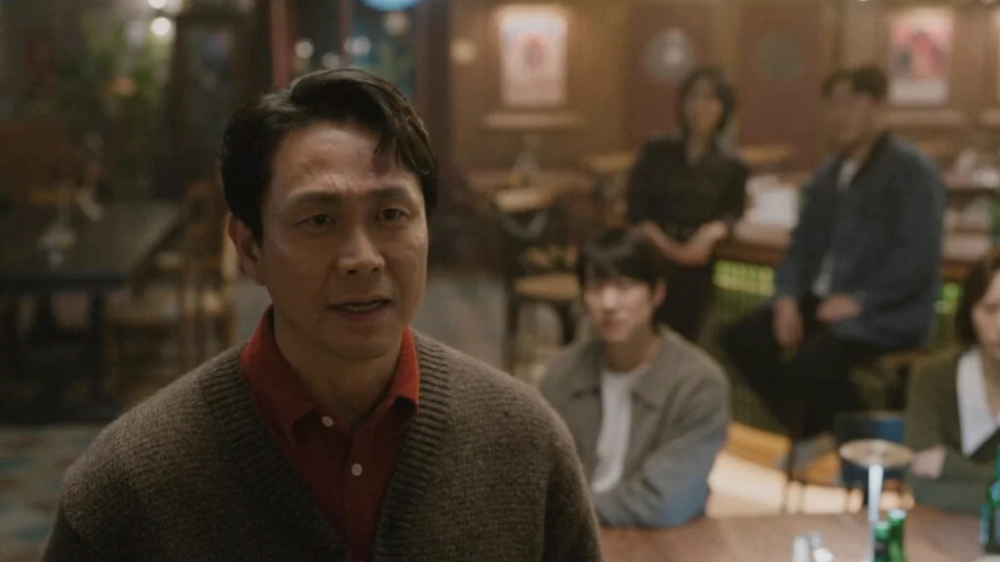

Il nostro meglio · Episodio 2 · JTBC / Netflix 2026
Urla finché il mondo non ti sente
Dong-man riscopre la bellezza di essere "inutilmente umano" e lo urla al mondo. Eun-a lo sente e ritrova la forza di lottare.
Il cast principale


Il secondo episodio di We Are All Trying Here continua a parlare di debolezza, ma sposta improvvisamente il bersaglio. Nel pilot la fragilità era tutta addosso ai protagonisti: Dong-man la trasformava in rumore, battute fuori posto e disperazione esibita; Eun-a la interiorizzava fino quasi a consumarsi. Qui invece il drama guarda gli altri. Quelli che ce l'hanno fatta.
Registi affermati, adulti funzionali, persone che hanno imparato a parlare il linguaggio del successo. Eppure più cercano di prendere le distanze da Dong-man, più rivelano qualcosa di miserabile. Lo osservano dall’alto, si compiacciono del suo fallimento, quasi avessero bisogno che lui resti indietro per sentirsi davvero arrivati. È una debolezza diversa: non quella di chi crolla apertamente, ma quella di chi usa il fallimento altrui per non guardare il proprio vuoto morale.
"Che cos’è un incompetente? Come uno chef che non sa cucinare. Un insegnante che non sa insegnare. Devo continuare?" "O come un essere umano senza umanità.” — Byeon Eun-a, episodio 2
Park Hae-young costruisce l'episodio attorno a una domanda semplice e vertiginosa: cosa succede quando qualcuno smette di guardarti come un fallito e ti riconosce per ciò che sei?
Sceneggiatura: la grammatica del non detto
Scena chiave
Dong-man viene bandito dall'Agit
Eun-a manda a Dong-man una lista di osservazioni sul copione alle due di notte. Non è critica: è dialogo. Dong-man risponde subito. Non dormiva nemmeno lui.
Scena chiave
Il pranzo con Gyeong-se
Gyeong-se invita Dong-man a pranzo con la premessa di un gesto generoso. La conversazione degenera in meno di cinque minuti. Nessuno dei due dice quello che pensa davvero.
Scena chiave
La scala antincendio
Dong-man ed Eun-a si ritrovano a parlare nell'unico posto in cui nessuno li cerca: la scala di servizio del palazzo di Choi Film. Forse perché è l'unico posto in cui entrambi si sentono fuori posto allo stesso modo.
Scena chiave
Hye-jin e lo specchio
Una breve scena — quasi marginale — in cui Hye-jin si guarda allo specchio prima di una cena con il marito. Non regola nulla. Si limita a guardarsi. La serie non commenta. Non ha bisogno di farlo.
Park Hae-young ha sempre scritto dialoghi che sembrano sbagliati nel momento in cui vengono pronunciati, e giusti il giorno dopo. Il secondo episodio ne offre la conferma più precisa finora. La conversazione tra Gyeong-se e Dong-man durante il pranzo è un esempio quasi perfetto di questa tecnica: i due parlano di cinema, di opportunità, di un possibile progetto. Ma quello che si dicono davvero — gelosia, rancore, la necessità di essere riconosciuti — non viene mai nominato. Rimane nello spazio tra le frasi, denso come fumo.

C'è un momento in cui Gyeong-se offre a Dong-man di co-scrivere la sceneggiatura del suo prossimo film. Lo dice con tono leggero, come se stesse facendo un favore. Dong-man risponde con altrettanta leggerezza, come se non gli importasse. Poi si alza per andare al bagno e rimane immobile per trenta secondi davanti alla porta, con le spalle alla telecamera. Non sappiamo esattamente cosa stia provando — umiliazione, speranza, diffidenza, tutte e tre insieme — e Park non ce lo spiega. Lascia che quella schiena dica tutto.
"E voi siete così deboli da farvi rovinare la vita da Dong-man?" — Hwang Jin-man, episodio 2
La scena della scala antincendio è quella che l'episodio sembrava stare costruendo sin dall'inizio, senza che ce ne accorgessimo. Eun-a ha trascorso il giorno a correggere le bozze di altri, ad ascoltare il capo, a contenere tutto. Dong-man ha trascorso il giorno a convincersi che l'offerta di Gyeong-se non fosse una carità. Li ritroviamo nella scala quasi per caso — o almeno così sembra. Parlano di Weather Maker in modo diverso rispetto all'incontro in ufficio: senza la presenza di Choi a fare da filtro, Eun-a dice quello che pensa davvero. E quello che pensa davvero è che la sceneggiatura ha qualcosa di raro — qualcosa che lei non riesce ancora a nominare con precisione, ma che riconosce.

Quello che colpisce nella scrittura di Park Hae-young è che non assegna mai ai personaggi la comprensione di ciò che stanno vivendo. Eun-a non sa ancora perché le importi così tanto di quella sceneggiatura. Dong-man non sa ancora perché la presenza di lei lo renda meno rumoroso. La serie lo sa, e aspetta che anche loro arrivino a capirlo — con tutta la lentezza di chi ha imparato a diffidare delle proprie emozioni.
Il sottotesto tra Gyeong-se e Hye-jin si fa più leggibile nel corso dell'episodio. Non attraverso grandi scene di confronto — Park Hae-young non lavora così — ma attraverso l'accumulo di piccoli gesti sbagliati. Gyeong-se arriva a cena con trenta minuti di ritardo e non lo menziona. Hye-jin non chiede spiegazioni. Kang Mal-geum lavora su quella sequenza con una precisione chirurgica: Hye-jin mangia, sorride, risponde alle domande. Ma c'è qualcosa nella postura, nella velocità con cui riempie i bicchieri, che suggerisce una persona che da tempo ha smesso di aspettarsi le cose giuste.
Recitazione: l'arte di non spiegarsi
Koo Kyo-hwan fa qualcosa nel secondo episodio che non avevo previsto: rallenta. Dong-man nel pilot era tutto movimento, volume, impatto fisico. Qui ci sono momenti — pochi, preziosi — in cui il personaggio si ferma davvero. Succede nella scala, quando Eun-a parla della sceneggiatura. Succede nel bagno del ristorante. Sono fessure brevissime, e Koo Kyo-hwan le abita con una cura che fa capire quanto lavoro ci sia dietro l'apparente disordine del personaggio. Dong-man non è caotico per natura: è caotico perché non sa stare fermo senza che il dolore lo raggiunga. Quando si ferma davvero, il dolore arriva. E Koo Kyo-hwan ci mostra esattamente quella frazione di secondo in cui il personaggio sceglie se lasciarlo entrare o ricominciare a correre.

Trenta secondi con le spalle alla telecamera. Park Hae-young non ha bisogno di spiegare altro.
Go Youn-jung continua a costruire Eun-a per detrazione. Ogni scena la vediamo eliminare qualcosa: un'emozione, una risposta, un gesto che stava per partire e viene trattenuto. Ma nel secondo episodio c'è una novità: la vediamo sorridere. Una volta sola, brevemente, mentre legge le risposte di Dong-man alla sua lista di osservazioni. Il sorriso dura forse due secondi. Go Youn-jung non lo enfatizza — lo lascia accadere, quasi di nascosto, come se anche Eun-a non volesse esserne sorpresa. È forse il momento emotivo più forte dell'episodio, proprio perché è il più piccolo.
"Un giorno qualcuno ti guarderà e penserà che sei una fortuna. Non so quando. Ma accadrà." — Hwang Jin-man a Dong-man, episodio 2
Park Hae-joon nei panni di Jin-man occupa finalmente una scena tutta sua: il fratello minore che porta Dong-man a bere e gli dice, con la semplicità propria di chi ha smesso di essere delicato, quello che nessun altro dei suoi amici riesce a dirgli. Non lo consola — il tono non è quello. È piuttosto il discorso di qualcuno che ha osservato da vicino il dolore altrui per vent'anni e ha capito che la compassione, a volte, non ha bisogno di circonlocuzioni. Park Hae-joon calibra ogni parola con un'economia ammirevole. Quando Jin-man finisce di parlare, Dong-man non risponde. Ordina un altro bicchiere. È la risposta più onesta che il personaggio riesca a dare.
Regia e Fotografia
Cha Young-hoon trova il suo ritmo nel secondo episodio. Le incertezze che si avvertivano nel pilot — qualche transizione sbrigativa, qualche scena che faticava a trovare il proprio punto di fine — qui si fanno più rare. La sensazione è che il regista si stia fidando sempre di più del materiale, e in particolare del silenzio. La sequenza del pranzo tra Gyeong-se e Dong-man dura quasi dieci minuti senza musica. La camera rimane ferma, leggermente decentrata rispetto ai due personaggi, come un terzo commensale che non vuole farsi notare. L'effetto è quello di un imbarazzo condiviso con lo spettatore.
La scelta cromatica si fa più marcata rispetto al pilot. Gli spazi di Choi Film — uffici luminosi, superfici bianche, vetrate — vengono contrapposti con sistematicità agli spazi di Dong-man ed Eun-a: corridoi stretti, luce calda e radente, angoli dove ci si può nascondere. Non è una lettura simbolica forzata; è semplicemente la logica visiva che la serie sta costruendo, episodio dopo episodio, tra chi appartiene al sistema e chi lo abita di passaggio.

L'unica scena in cui la regia perde un po' di sicurezza è quella che chiude l'episodio: Dong-man cammina verso casa di notte e si ferma sotto la finestra illuminata di un palazzo che non identifichiamo subito. È un'immagine bella, ma forse troppo consapevole della propria bellezza. Cha Young-hoon indugia qualche secondo di troppo, come se non si fidasse fino in fondo della semplicità del gesto. È un'imperfezione minore — e in fondo anche questa rivela qualcosa: la serie sta ancora crescendo dentro se stessa, e lo fa visibilmente.
Ho finito il secondo episodio e sono rimasto fermo per qualche minuto a non fare niente. Non è una cosa che mi capita spesso. Di solito, quando una serie mi coinvolge, ho voglia di andare avanti subito — premere play, consumare. Qui no. Avevo bisogno di stare un po' dentro quello che avevo visto prima di lasciarlo andare.
Quello che mi ha colpito di più, paradossalmente, è la scena più piccola. Eun-a che sorride al telefono. Non perché sia romantica — non lo è ancora, o non del tutto — ma perché è la prima volta che la vedo fare qualcosa senza che sia controllato. Quel sorriso non era pianificato. Le è scappato. E Go Youn-jung lo recita esattamente così: come qualcosa che non aveva previsto di provare.
C'è una domanda che mi porto dietro dall'episodio, e che la serie sembra stare costruendo con molta pazienza: quanto tempo ci vuole a imparare a ricevere qualcosa? Dong-man è talmente abituato a essere il problema di tutti che non sa ancora cosa fare quando qualcuno lo tratta come una risorsa. Eun-a è talmente abituata a contenere che non sa ancora riconoscere un'emozione prima che il corpo gliela segnali con un'epistassi o un battito accelerato. Sono due persone che hanno sviluppato meccanismi di sopravvivenza opposti per proteggersi dalla stessa cosa: la delusione di aspettarsi qualcosa da qualcuno.
Il pranzo con Gyeong-se mi ha fatto stare male in modo molto preciso. Non per la crudeltà — Gyeong-se non è crudele, o almeno non consapevolmente. Ma perché conosco quel tipo di generosità: quella che si offre sapendo già che verrà rifiutata, così da potersi dire di aver provato. E conosco anche il modo in cui Dong-man resta immobile davanti alla porta del bagno: è il modo in cui si sta immobili quando non si sa ancora se essere grati o furiosi, e la risposta giusta sembra impossibile da trovare.
Siamo al secondo episodio su dodici. Park Hae-young ha già costruito qualcosa che fa male in modo preciso e pulito. Questo, per me, è il segno che la serie sa esattamente dove sta andando.
- Il sorriso di Eun-a: due secondi che cambiano tutto.
- La scena del bagno: Koo Kyo-hwan con le spalle alla telecamera vale più di qualsiasi monologo.
- La gestione del silenzio, molto più sicura rispetto al pilot.
- Jin-man: finalmente una scena che gli appartiene, e la usa benissimo.
- Il finale visivamente un po' compiaciuto — quell'indugio sotto la finestra illuminata.
- Alcuni personaggi dell'ensemble (gli altri del gruppo degli "Otto") restano ancora abbozzati.
- Il ritmo del secondo atto centrale è leggermente più lasco rispetto all'apertura.